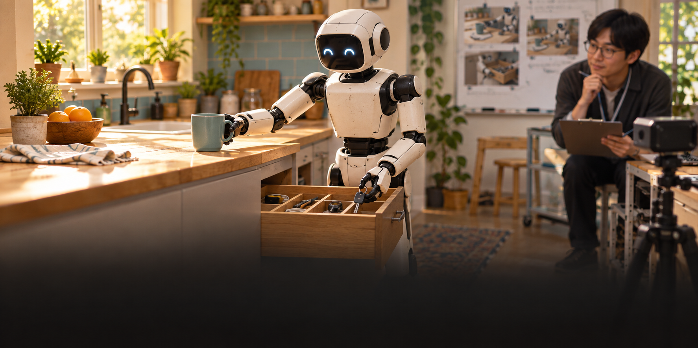

스탠퍼드 연구진, 아스트라가 처음 보는 주방에서 로봇을 움직이게 했다
스탠퍼드와 칼텍 연구진이 AI 아스트라의 도움으로 사람처럼 생긴 로봇이 처음 보는 주방을 정리하고 물건을 찾아오게 했다. 연구 이름은 홈바디(HomeBody)다. 로봇은 주방을 먼저 둘러본 뒤, 보이지 않는 서랍 속 물건의 위치도 기억해 다시 찾아갔다.

처음 보는 주방을 정리
연구진은 로봇에게 무엇을 시켰나
공개된 시연에는 두 가지 일이 나온다. 첫째, 흩어진 커피 봉지를 주방 가운데로 모으고 상한 우유·오렌지 주스 팩을 버리는 일이다. 둘째, 주인이 약을 어디에 두었는지 기억해 서랍에서 찾아 건네고, 상한 팩도 함께 치우는 일이다. 한 물건만 집는 동작보다 여러 장소를 오가며 순서를 정해야 해서 더 어렵다.
사람은 주방을 둘러본 뒤 한동안 안 보이는 물건도 어디 있었는지 기억한다. 로봇은 보는 방향이 바뀌면 카메라에서 물건이 사라진다. 홈바디는 앞서 본 장면과 위치를 저장해, 지금 눈앞에 없는 약 서랍도 다시 찾아간다. 여기서 ‘공간 기억’은 방의 어디에 무엇이 있었는지를 로봇의 위치와 함께 남기는 기능이다.
예를 들어 “약을 가져다줘”라는 말만 들으면 약이 어느 서랍에 있는지 문장에는 없다. 로봇이 앞서 서랍과 약을 본 기억을 사용해 그쪽으로 간다. 공개 시연에서는 약을 꺼내 사람에게 건네는 과정까지 보여 준다. 연구진은 이처럼 자세한 위치를 말하지 않아도 과제를 이어가는 능력을 시험했다.
처음 보는 주방에서 하는 일
카메라와 거리 센서로 주방의 길과 물건을 기록
아스트라가 어디로 갈지와 할 일을 순서대로 선택
로봇이 걷고, 집고, 놓고, 서랍을 열기
아스트라가 손가락까지 직접 움직이나
아니다. 아스트라는 높은 수준의 결정을 한다. 다음에 어느 물건을 잡을지, 어느 위치로 갈지, 어떤 준비된 동작을 실행할지 고른다. 실제 걷기와 손 움직임은 로봇에 미리 넣은 기술이 처리한다. 사람으로 치면 “서랍을 열어 약을 꺼내자”는 계획과 손잡이를 잡아 당기는 근육 움직임을 나눠 맡긴 셈이다.
연구진이 준비한 기본 동작은 걷기, 물건 잡기, 놓기, 서랍 열기다. 로봇은 한 동작이 실패하면 가까운 곳에서 다시 시도하고, 그래도 안 되면 실패 이유를 아스트라에 돌려준다. 아스트라는 그 결과를 보고 자세를 바꾸거나 다른 길을 고를 수 있다.
이 방식이 흥미로운 까닭은 주방마다 “컵까지 세 걸음, 서랍 손잡이까지 두 걸음”처럼 세세한 행동표를 새로 만들지 않았기 때문이다. 하지만 아무 준비도 없었던 것은 아니다. 연구진은 로봇의 기본 동작을 미리 마련했고, 새 주방에서는 카메라·거리 측정 자료를 모아 그 공간의 지도를 만들었다.
연구진은 실제 주방을 닮은 컴퓨터 속 공간도 만들었다. 이를 ‘디지털 트윈’이라고 부른다. 로봇이 방에서 기록한 영상과 거리 정보를 맞춰, 이동할 길과 물건의 위치를 판단하는 데 쓴다. 화면만 보고 모든 거리를 정확히 재는 것은 어려우므로 측정 자료를 함께 넣었다.
집에서 바로 쓸 수 있나
아직은 연구 시연이다. 사용한 몸체는 유니트리 G1 로봇이고, 현장에서 영상 처리와 동작 계산을 할 수 있는 고성능 노트북이 필요하다. 아스트라는 멀리 있는 서버에서 실행돼 로봇에게 다음 동작을 보낸다. 즉 가정용 완제품이 상자에서 나와 바로 부엌일을 하는 단계가 아니다.
설치에도 시간이 든다. 로봇이 처음 보는 공간을 탐색하고, 실제 방과 맞는 컴퓨터 지도를 만든 뒤, 물건을 다룰 준비를 해야 한다. 연구진은 이 과정에 시간과 AI 사용 비용이 든다고 밝혔다. 로봇의 손가락 모터가 오래 일하면 과열될 수 있고, 물건을 잡을 수 있는 거리에도 한계가 있다.
AI가 다음 일을 생각하는 동안 로봇이 잠시 멈추는 문제도 있다. 사람에게는 짧아 보이는 지연도 컵을 들거나 서랍을 여는 연속 동작에서는 어색할 수 있다. 연구진은 그런 지연과 하드웨어 한계를 공개 페이지에 적었다.
실제 집에서는 아이, 반려동물, 뜨거운 냄비처럼 연구실보다 훨씬 많은 변수가 생긴다. 이번 시연은 새 주방에서 복잡한 일을 잇는 가능성을 보여 준다. 가정에서 안전하게 오래 일할 수 있는지는 별도의 시험이 필요하다.
왜 이 연구가 눈에 띄나
로봇이 방 안에서 한 번 물건을 잡는 모습은 이미 여러 번 공개됐다. 홈바디는 보던 물건이 사라져도 위치를 기억하고, 방을 오가며 다른 동작을 이어 붙였다. AI가 말의 뜻과 공간 기억을 연결해 로봇의 다음 기술을 선택한 점이 핵심이다.
연구진의 공개 코드 안내와 프로젝트 영상은 이 결과를 더 자세히 확인하는 출발점이 된다. 다만 코드가 공개돼도 같은 로봇과 장비, 안전한 시험 장소가 필요하다. 이 연구의 가치는 로봇이 새로운 공간에서 행동 순서를 정하는 방법을 보여 준 데 있다.
쉽게 말해 아스트라는 “저 물건을 어느 손으로 어떻게 잡을까”만 계산한 것이 아니다. 주방을 본 기억을 바탕으로 어디로 가고, 어떤 준비된 동작을 먼저 쓸지 고르는 두뇌 역할을 했다. 손발은 미리 만든 로봇 기술이 움직였다.
로봇이 주방을 ‘기억’하는 과정
연구진은 로봇에게 처음부터 정리 명령만 내리지 않았다. 먼저 주방 안을 돌아다니며 카메라와 거리 센서로 공간을 살피게 했다. 로봇은 자기가 어디에서 무엇을 봤는지 저장했다. 사람도 낯선 집에서 물 한 잔을 찾으려면 먼저 부엌과 컵의 위치를 훑어보는 것과 비슷하다.
다음에는 그 기록을 컴퓨터 안의 주방 모형과 맞췄다. 거리 센서는 벽과 가구까지 얼마나 떨어졌는지 재고, 카메라는 어떤 물건이 보이는지 알려 준다. 두 자료를 합치면 로봇이 컵을 향해 걸어갈 길을 고를 수 있다. 화면에 컵이 사라져도 저장한 위치를 이용해 다시 돌아갈 수 있다.
약을 찾는 시연은 그 기억을 시험한다. 처음에는 약이 로봇 시야에 없다. 로봇은 전에 봤던 장면을 떠올려 서랍으로 이동하고, 손잡이를 잡아 열고, 약을 꺼낸다. 연구진이 보여 준 것은 “서랍을 열어라” 한 동작보다, 모호한 사람의 요청을 여러 동작으로 나눠 실행하는 과정이다.
그 과정에서 AI가 모든 순간을 세밀하게 지휘하지는 않는다. 서랍 손잡이를 잡는 중 손이 빗나가면 기본 동작이 가까운 위치에서 다시 시도한다. 다시 실패해 다른 계획이 필요할 때 결과를 아스트라에게 알려 준다. 그래서 큰 계획을 고르는 AI와 즉시 몸을 조정하는 기술이 서로 다른 속도로 일한다.
이전 로봇 연구와 무엇이 다른가
로봇 연구에서는 특정 방의 물건 위치와 동작 순서를 미리 학습시키는 방식이 많다. 그러면 같은 방에서는 빠르게 움직일 수 있지만 방을 바꾸면 다시 자료를 모아야 한다. 홈바디는 처음 보는 주방에서 직접 탐색한 정보를 바탕으로 일을 하게 했다. 연구진은 그 주방만을 위한 추가 행동 학습 없이 시연했다고 설명한다.
그러나 기본 기술은 미리 학습하고 준비했다. 걷고 균형을 잡는 기술, 물건을 잡는 기술, 카메라로 목표를 따라가는 기술이 이미 있었다. 아스트라는 이 기술들을 알맞은 순서로 부른다. ‘처음 보는 주방’이라는 표현은 새로운 환경에 대한 뜻이지, 아무 훈련도 받지 않은 로봇이라는 뜻이 아니다.
연구 시연과 가정용 제품의 차이
정해진 주방 과제에서 탐색·기억·정리·가져오기
기본 동작, 공간 탐색, 지도, 고성능 노트북
설치 시간, 비용, 동작 지연, 손 모터의 지속 사용
한 번의 시연으로 집안일 전체를 맡길 수 있는 수준이 된 것도 아니다. 실제 집은 가구 배치가 바뀌고 사람과 동물이 움직이며, 깨지기 쉬운 물건도 많다. 로봇은 자기 손이 닿는 범위에서만 물건을 다룰 수 있다. 여러 시간 쉬지 않고 일을 하면 모터 온도와 배터리도 문제가 된다.
그럼에도 이 연구가 보여 준 변화는 분명하다. 로봇이 새로운 장소를 먼저 살피고, 그때 저장한 기억으로 나중의 지시를 해석했다. 사람처럼 모든 집을 자유롭게 청소한다는 발표가 아니라, 새로운 공간에서 ‘먼저 알아보고 나중에 행동하는’ 연결 고리를 보여 준 연구다.
시연 장면을 볼 때 확인할 것
공개 영상에는 속도를 높인 장면이 있다. 연구진은 일부 기본 동작의 미리보기를 빠르게 재생했고, 서랍을 열거나 물건을 잡는 과정에는 다시 시도한 장면도 포함했다고 설명한다. 영상에서 몇 초 만에 움직이는 것처럼 보여도 실제 로봇이 같은 속도로 계속 집안일을 한 것은 아니다. 이 차이를 알고 보면 성과가 더 정확히 보인다.
연구진은 컴퓨터 속 주방에서도 같은 명령의 진행 과정을 보여 준다. 이것은 실제 로봇 시연을 이해하기 위한 보조 화면이다. 컴퓨터 모형에서 성공한 동작과 실제 로봇이 물건을 잡아 움직인 장면을 구분해 볼 필요가 있다. 프로젝트 페이지는 두 화면을 각각 제공한다.
홈바디는 아스트라를 다른 시각·언어 AI로 바꿔 연결할 수 있도록 설계됐다. 여기서 시각·언어 AI는 카메라 장면과 사람의 말을 함께 이해하는 모델이다. 지금 공개된 핵심 시연에는 아스트라가 사용됐다. 따라서 성과를 평가할 때는 로봇의 미리 준비된 몸 동작과 아스트라의 계획 역할을 함께 봐야 한다.
출처와 더 읽을 자료
대표 그림은 이 기사를 위해 AI로 만든 설명용 이미지다. 실제 HomeBody 시연 사진이나 실제 G1 제품 사진이 아니다. 이미지 문구와 도표는 편집부가 따로 작성했다.